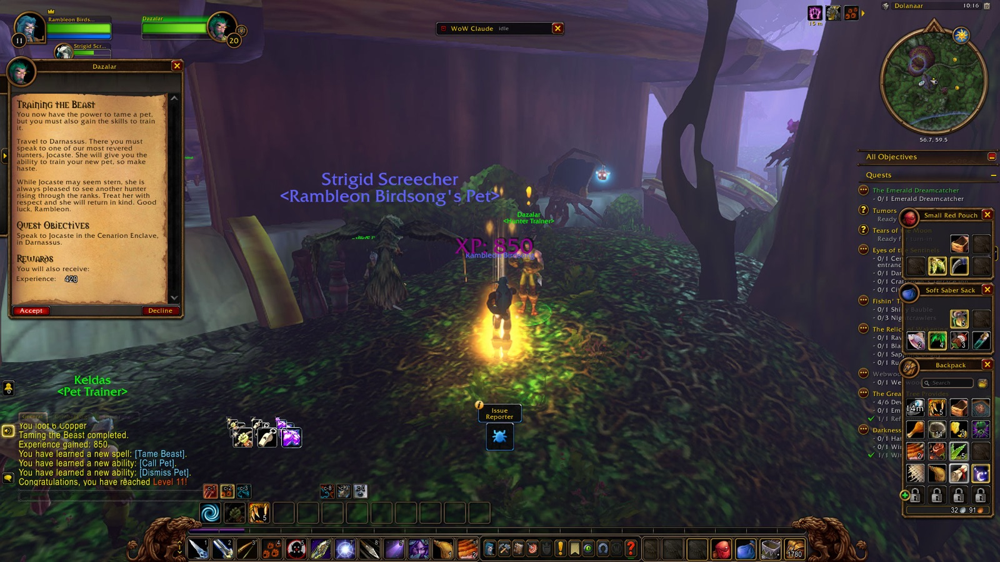
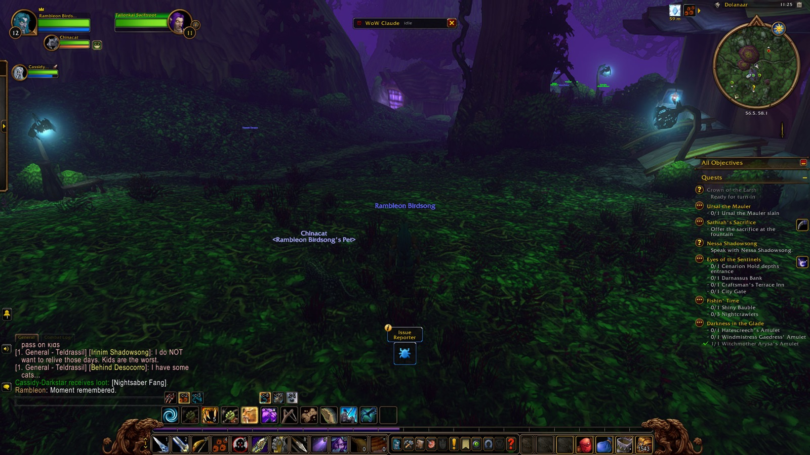
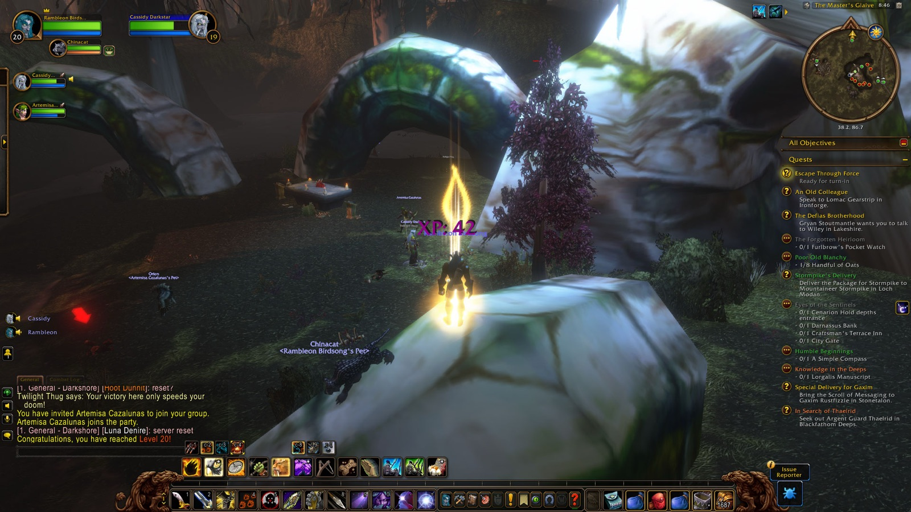
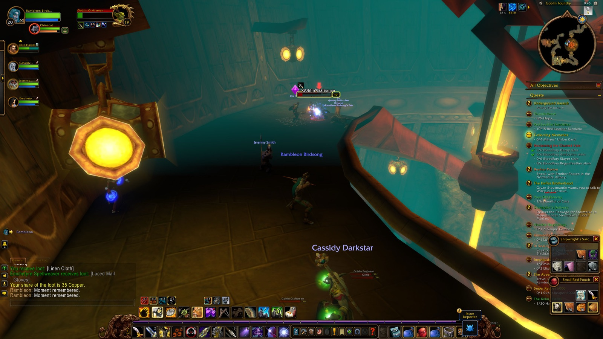
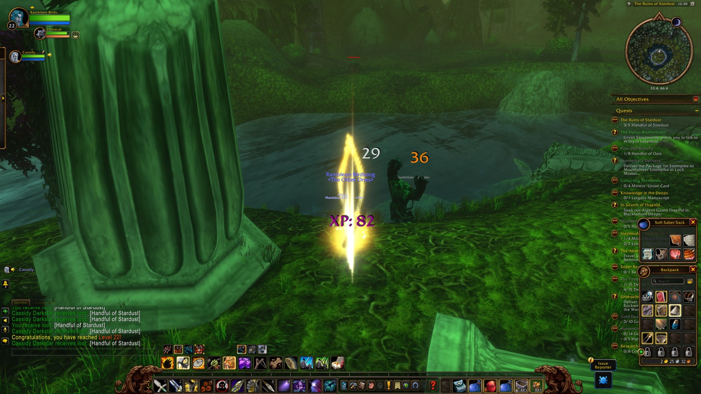

The pictures
66






Sixty-six pictures kept the milestones, from Dolanaar to Twilight Vale to The Master's Glaive, and one marked moment in the Goblin Foundry.
Night Elf Hunter · Alliance · Level 22. 12 nights, September 21 to October 3, 2026.
Twelve nights in late September and early October, and Rambleon Birdsong walked out of them a Night Elf Hunter with a little more road behind him.
Across 12 nights. The longest was September 27: 8h 18m.
Even the longest night, September 27, was less a marathon than a long unhurried stretch with the world still open ahead.
That night →14 levels gained. Level 22 came in The Ruins of Stardust.
Fourteen levels is a lot of growing, and the last one, in The Ruins of Stardust, must have felt earned.
The biggest night was September 26: 26 quests.
On September 26 he kept turning in quests until the day's work had quietly piled up behind him.
That night →179 kinds of enemy. Wild Grell fell most often.
The Wild Grell fell most often, but the long list of kinds shows how widely he wandered, with Defias Miner and Pridewing Wyvern close behind.
15 zones, 136 places.
Darkshore held him longest, with Ashenvale and Teldrassil close behind, so the home of his people shaped most of these nights.
47 companions along the way. Cassidy was there on 9 nights.
Cassidy was at his side on nine nights, and Bird, Karis, Dire and Jstermy each shared a stretch of the road.
Darkshore claimed 18 of them.
Darkshore took eighteen of them, and Ashenvale thirteen, the sort of sting a hunter shrugs off and carries on from.
Nine keepsakes, from the Demon Band to the Wrangler's Belt of the Owl, small proof that the walking had paid him something.
Blackfathom Deeps, Deadmines.
Blackfathom Deeps and the Deadmines were the two dark places he went into, and he came back out of both.
i really like darnassus... very calm. never overcrowdedCenarion Enclave · September 23
turning in a couple quests then turning in for the nightDolanaar · September 24
a long walk on the long wash is in orderThe Long Wash · September 27
patience is key with pridewingsMirkfallon Lake · September 28
1st train rideDeeprun Tram · September 29
Calm in Darnassus, a quiet turn for bed in Dolanaar, patience with pridewings, and a first tram ride: he noticed the small things.





Sixty-six pictures kept the milestones, from Dolanaar to Twilight Vale to The Master's Glaive, and one marked moment in the Goblin Foundry.
89% of the time with someone at your side.
Nearly nine hours in ten with someone beside him says it plainly: he was seldom alone, and it suited him.
Rambleon Birdsong began these nights at level 8 and ended them at 22, with most of the road laid through Darkshore, Ashenvale and Teldrassil. He liked the calm of Darnassus, and he learned that patience is key with pridewings. Cassidy was beside him for so many hours that the road rarely felt long. The deaths stung, as they do, but they never turned him around. When he stopped, it was with the quiet satisfaction of someone who had gone somewhere and had good company all the way.